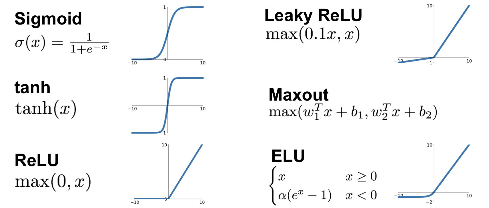
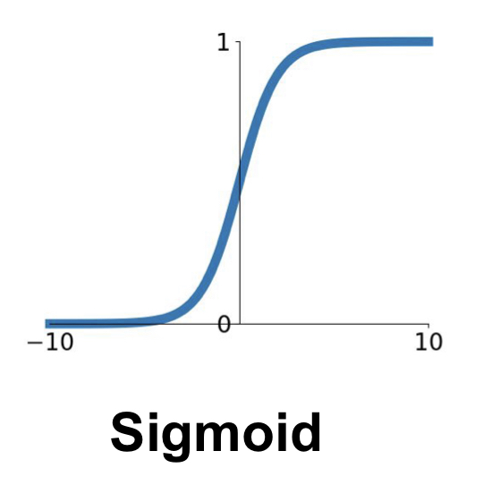
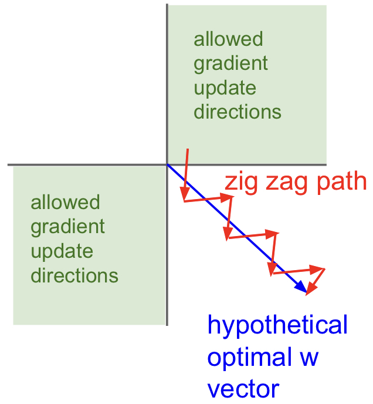
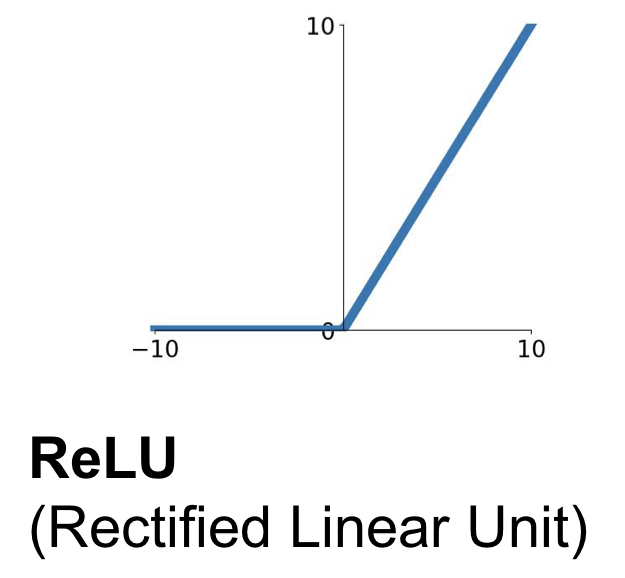
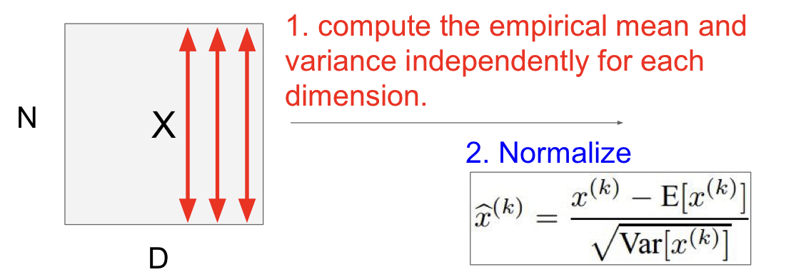
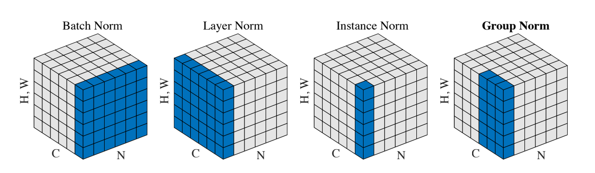
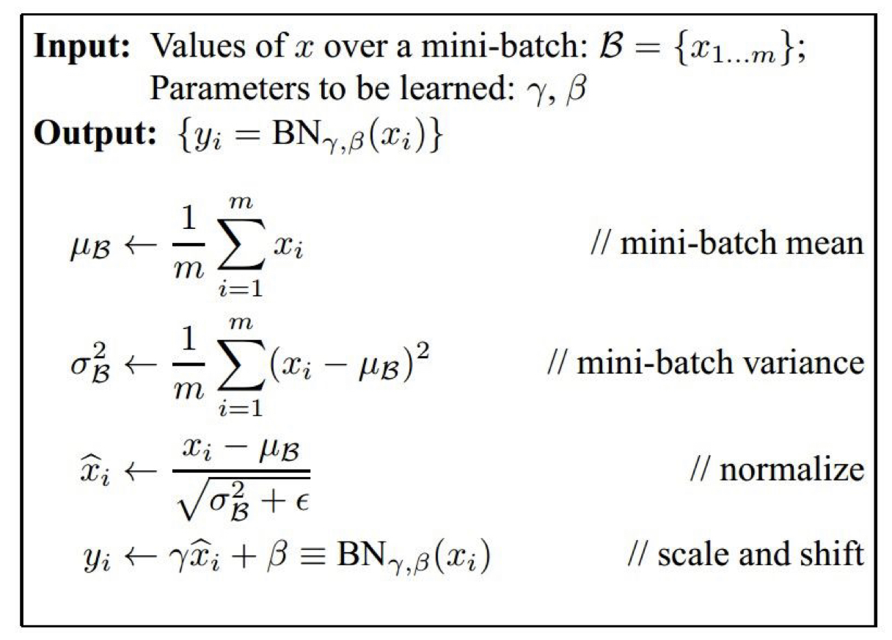
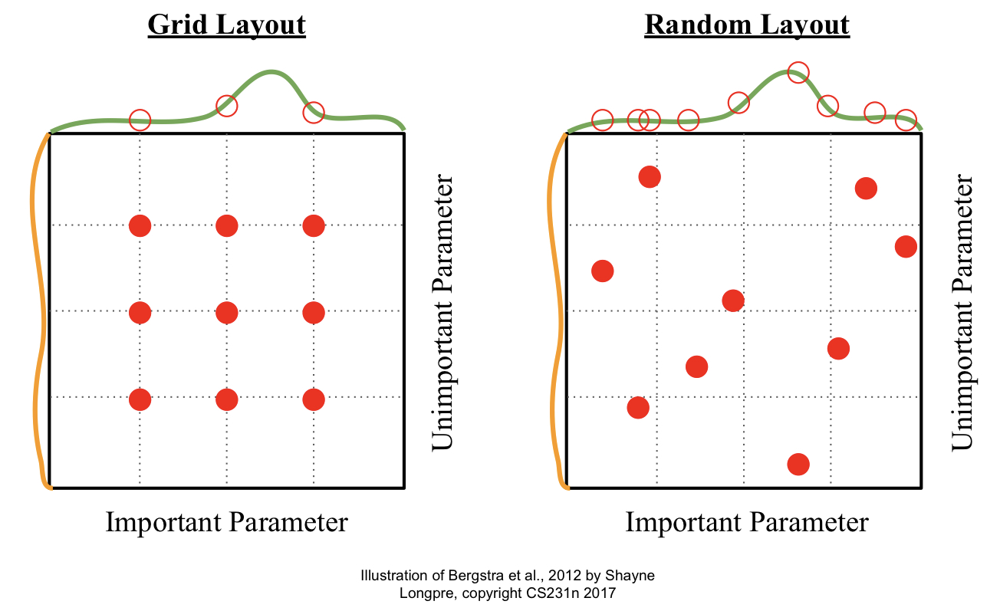
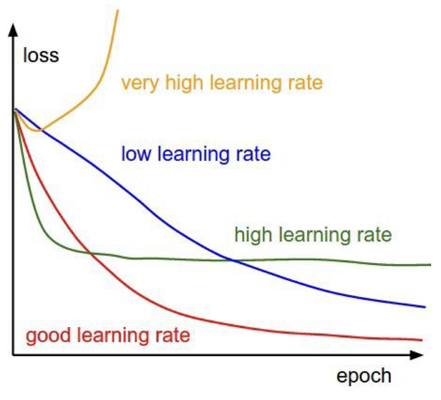

CS231n Lecture6 정리
Lecture 6 : Training Neural Networks, Part I
Neural Network를 Train 할 수 있는 다양한 방법들에 대하여 설명한다. Activation Functions, Weight Initialization, Batch Normalization, Babysitting the Learning Process, Hyperparameter Optimization 를 다룬다.
Activation Functions
다음과 같은 Activation Function에 대하여 논해보자.

Sigmoid Function

Sigmoid Function은 뉴런의 ‘활성화’를 가장 직관적으로 잘 나타내어 예전부터 사용되었는데, 다음의 문제점들을 가진다.
1) Saturated Neurons “kill” the gradients
- input이 가령 조금 크거나 (10 이상) 조금 작다면 (-10 이하), 기울기 값이 0이 된다 (saturated). 때문에 Chain Rule을 생각하면 이후에 등장하는 ‘모든’ gradient 값이 0이 되며, 이를 ‘killing the gradient’라고 표현한다.
2) Not zero-centered
- Zero-Centered는 activation function이 가져야 하는 중요한 조건 중 하나이다. Sigmoid Function의 경우에는 output이 항상 양수(positive)이다. 따라서 Backpropagation 단계 (Backward Flow)를 생각하면 들어오는 gradient 값과 나가는 gradient 값의 부호가 항상 동일하다. 즉, gradient 값들이 all positive 하거나 all negative 하다. 이 경우에는 다음과 같이 zig zag path로 최적화가 진행되므로, 굉장히 비효율적일 확률이 높다.

3) exp() is computationally expensive
위의 $tanh(x)$ function은 zero centered 라는 점에서 sigmoid function 보다 좋지만, saturated 되었을 때 발생하는 gradient killing 문제는 해결되지 않았다.
ReLU Function (Rectified Linear Unit)

ReLU function은 + region 에서 saturate 되지 않고, very computationally efficient 하며, sigmoid와 tanh에 비해 빨리 수렴한다(약 6배)는 장점이 있지만, zero-centered 하지 않다. 절반의 영역(- region)에서 saturate 되므로, 아주 작은 양의 bias를 통해 ReLU neuron을 initialize 하는 것이 좋다.
ReLU function의 문제들을 극복하기 위하여 Leaky ReLU(saturate 하지 않으며, 따라서 뉴런이 “죽지” 않는다), ELU(Leaky ReLU에 비해 노이즈에 강하지만 computationally expensive한 exp 연산이 필요함) 등을 이용한다.
요약
- ReLU 를 이용하라. (learning rate의 선정에 유의한다)
- Leaky ReLU, Maxout, ELU를 시도해봐라.
- tanh 를 시도해 보되, 큰 기대는 하지 마라.
- Sigmoid는 사용하지 마라
Weight Initialization
Fully Connected Net 에서 등장하는 weight $W$ 는 모델이 학습을 통하여 최적의 값을 정해 나간다(backprop). 그렇다면, 처음에는 어떤 값들로 초기화를 해 주어야 하는가?
Idea 1 ) W = 0 init
모든 값들을 0으로 초기화하는 방법은 어떨까. 결론적으로, 이는 절대 하지 말아야 하는 방법이다. 이 경우에는 모든 뉴런들이 같은 행위를 하여, 결국 같은 gradient 값을 가지며, 같은 양만큼 update 될 것이다. 따라서 많은 뉴런이 전혀 의미가 없어진다.
Idea 2 ) Small Random Numbers init
가령 weight_scale 같은 걸 지정하여 W = np.random.randn(D, H) * weight_scale 와 같이 랜덤하게 주는 방법이다. 이 경우는 작은 네트워크에선 잘 들어맞지만, 네트워크가 깊어질수록 문제가 생긴다. weight_scale의 정도에 따라 초기 값들이 작으면 계속해서 작은 gradient가 만들어져 작은 값을 넘겨준다(backprop). 따라서 최종적으로 모든 뉴런의 activation이 0으로 몰리게 된다. (모든 뉴런이 죽음) 초기 값들이 크다면, activation이 모두 1이나 -1로 몰리게 된다. (모든 뉴런이 포화) 두 경우 다 네트워크의 층이 의미가 없어지는 방향이므로 좋지 못하다.
Idea 3 ) Xavier init
input의 variance와 output의 variance를 같게 유지하자는 것이 목표인데, 결과적으로 굉장히 잘 들어맞는다! 각 layer의 입력에 대략적인 unit gaussian 형태가 입력되기 때문에 위에서 언급한 문제가 발생하는 것을 방지한다. 단 ReLU를 사용할 때에는 절반의 뉴런이 어차피 죽게 되기 때문에, 추가적으로 /2 를 붙여주어야 한다.
강의에서 General Rule of Thumb으로, Xavier부터 시작하라는 조언을 해 주었다.
Batch Normalization
배치 단위로 입력 데이터를 (각 dimension에 대하여) 정규화시키는 행위를 의미한다. (아래 사진 참고)
참고로, dimension(feature) 단위로 mean과 std를 계산하여 정규화를 진행하는 Batch Normalization과 다르게, Layer Normalization이라는 놈은 batch 단위로 mean과 std를 계산하여 정규화한다. 이외에도 다양한 Normalization 기법이 존재하는데, 아래의 직관적인 그림이 많은 도움이 되었다. Batch의 크기가 결과에 유의미한 영향을 주는 Batch Normalization과는 달리, Layer Normalization은 Batch의 크기와 결과가 무관하다. (즉, hyperparameter 하나가 줄어드니까 이득!)

- 주로 Fully Connected Layer나 Convolutional Layer 이후에, 그리고 nonlinearity 이전에 적용한다.
$\gamma, \beta$ 의 parameter들을 이용하여 최종적으로 $y_i$를 scale 및 shift 하며, $\gamma$와 $\beta$는 BN의 backpropagation을 통해 학습된다. 전체적인 과정은 아래와 같다.
Test Time 시에는 Train Time과 비교하였을 때 BatchNorm layer가 다르게 작동한다! 각 mean, std가 train time 시에는 배치별로 계산되어 사용되지만, test time에서는 일일히 배치들의 mean과 std를 계산할 필요가 없기 때문에 training 과정에서 계산되는 running mean, running var와 같이 고정된 값의 mean, std를 사용한다.
Babysitting the Learning Process
Data Preprocessing을 완료하고, 적절한 architecture도 정했다고 하자. 이제 double checking 과정들을 통해 모델을 검증하면서, 좋은 성능을 낼 수 있도록 hyperparameter들을 잘 골라 모델을 train 해주면 된다.
Loss value Double Check
- SoftMax Loss에서, 초기에 W가 매우 작을 때 $ \text{loss} = \log(\text{number of classes}) $ 이었다 (참고: CS231n Lecture3) 따라서
weight_scale을 매우 작게(0.0001) 두고regularization = 0.0으로 두었을 때 loss 값이 $\log(\text{number of classes})$ 가 나오는지 확인한다. - 위의 상황에서 regularization 값을 크게 올렸을 때(1e3) loss 값이 더 커지는지 확인한다.
- SoftMax Loss에서, 초기에 W가 매우 작을 때 $ \text{loss} = \log(\text{number of classes}) $ 이었다 (참고: CS231n Lecture3) 따라서
Training (Learning Rate 찾기)
- 아주 작은 portion(20개)의 training data로 overfit이 가능한지 확인한다. 결과적으로 아주 작은 loss와 train accuracy 1.00 이 나와야 한다.
- small regularization(0.000001)로 두고, loss가 줄어드는 적절한 learning rate를 찾는다. 만약 loss가 줄어들지 않는다면 learning rate가 너무 작은 것이고, loss가 발산한다면 learning rate가 너무 높은 것이다. cost가 NaN이 뜬다면 거의 대부분 learning rate가 크다는 것을 의미한다.
Hyperparameter Optimization
기본적으로 coarse -> fine cross-validation을 실행한다: 처음에는 소량의 epoch만 돌려 보며 param의 대강적인 구간을 파악하고, 이후 running time을 늘린 finer search를 해준다. log space에서 optimize 해주는 것이 팁이다. (ex: lr = 10 ** uniform(-3, -6)) 또 하나의 팁은, 기존의 cost보다 다음 cost가 3배 이상보다 커진다면 발산하는 것이니 바로 break out 해줘도 된다.
위의 예시와 같이 Random Search를 해주는 것이 Grid Search를 해주는 것보다 유리한데, 그 이유는 Random Search 시에 더 많은 종류의 ‘중요 parameter’ 예시를 실험해 볼 수 있기 때문이다. 아래의 그림을 참고하라.

Loss Curve를 monitor, visualize 하는 것도 좋은 방법이다. Learning Rate에 따라 아래와 같이 다양한 형태의 loss curve가 나타날 수 있다. 이를 참고하여 learning rate 값 설정에 적용하자.

CS231n Lecture6 정리
http://yxxshin.github.io/2022/09/23/2022-09-23-CS231n-Lecture6/